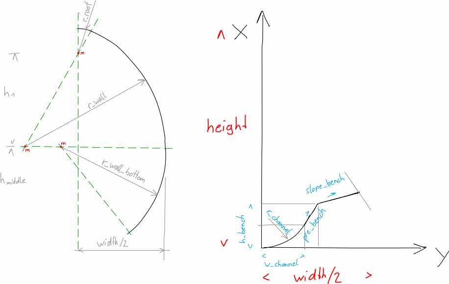
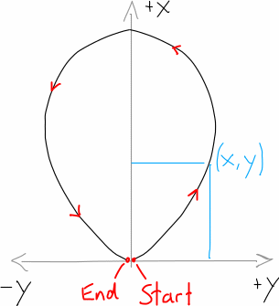

Main Function¶
CrossSection¶
Class
|
main class A Class that should help to generate custom cross-section shapes for the SWMM software. |
Methods
|
Initialise the cross-section class |
|
|
absolute height of the CS |
|
absolute width of the CS |
|
get absolute width of cross-section |
|
|
add part of cross-section |
make the cross-section as a double section (=Doppelprofil) |
|
list of functions to describe the cross-section shape |
|
create absolute point coordinates and write it into |
Figures
|
plot the shape curve on an axes |
|
create a plot of the cross-section |
Shape parameters
|
width of the cross-section at a certain height |
|
wetted perimeter in the partial-filled cross-section at a certain water level height |
|
flow area in the partial-filled cross-section at a certain water level height |
|
hydraulic radius in the partial-filled cross-section at a certain water level height |
flow area of the full-filled cross-section |
|
hydraulic radius of the full-filled cross-section |
|
wetted perimeter of the full-filled cross-section |
|
|
velocity in a partial-filled channel at a certain water level height |
|
velocity in a full-filled channel |
|
flow in a partial-filled channel at a certain water level height |
|
flow in a full-filled channel |
|
get the height of the water level based on the known flow |
swmm_api Functions
|
create an object with the data of the swmm curve data as relative coordinates |
|
create a SWMM curve object with the data of the swmm-shape_generator-CrossSection |
CrossSectionHolding¶
Class
|
cross section class for Holding Graz |
- class shape_generator.shape_generator.CrossSection(label, height=None, width=None, unit=None, double=False, accuracy=3, simplify=True)[source]¶
main class A Class that should help to generate custom cross-section shapes for the SWMM software.
- __init__(label, height=None, width=None, unit=None, double=False, accuracy=3, simplify=True)[source]¶
Initialise the cross-section class
- Parameters
label (str) – name/label/number of the cross-section
height (float) – absolute height of the CS
width (Optional[float]) – absolute width of the CS (optional) can be estimated
unit (Optional[str]) – enter unit to add the unit in the plots
simplify (bool) – if the ramer-douglas algorithm should be used to simplify curve
- get_height()[source]¶
get absolute height of cross-section
- Returns
height of cross-section
- Return type
- add(x_or_expr, y=None)[source]¶
add part of cross-section
can be a:
function/expression
point (x,y) coordinates
boundary condition (x or y) of a surrounding function = only x or y is given and the other is
Noneslope (x=slope, y=unit of slope)
- Parameters
x_or_expr (Optional[float , None, CustomExpr]) –
y coordinate of unit of slope
- property shape_description¶
list of functions to describe the cross-section shape
- Returns
description of the cross-section shape
- Return type
- get_points()[source]¶
create absolute point coordinates and write it into
pointsTo create a
list[tuple]of all the points to describe the cross-section. This function replaces the Expressions given inaddto points with x and y coordinates and writes them into thepointsattribute.
- profile_axis(ax, relative=False, half=False, fill=False, marker='.', ls='-', **kwargs)[source]¶
plot the shape curve on an axes
- Parameters
ax (matplotlib.pyplot.Axes) – plot axes
relative (bool) – if the plot should be in relative size
half (bool) – if ony the half curve should be plotted
fill (bool) – if the curve should be fill on the inside
marker (str) – marker of the curve
ls (str) – line-style of the curve
**kwargs – plot keyword arguments
- Returns
plot axes
- Return type
matplotlib.pyplot.Axes
- profile_figure(relative=False, half=False, fill=False, **kwargs)[source]¶
create a plot of the cross-section
- b_w_t(hi)[source]¶
width of the cross-section at a certain height
(Wasseroberflächenbreite im teilgefüllten Querschnitt)
- Parameters
hi (float | numpy.ndarray) – a certain height
- Returns
width at the certain height
- Return type
- l_u_t(hi)[source]¶
wetted perimeter in the partial-filled cross-section at a certain water level height
(benetzter Umfang im teilgefüllten Querschnitt)
- Parameters
hi (float | numpy.ndarray) – a certain height
- Returns
wetted perimeter at the certain height
- Return type
- property l_u_v¶
wetted perimeter of the full-filled cross-section
(benetzter Umfang im vollgefüllten Querschnitt)
- Returns
wetted perimeter
- Return type
- area_t(hi)[source]¶
flow area in the partial-filled cross-section at a certain water level height
(Fließquerschnitt im teilgefüllten Querschnitt)
- Parameters
hi (float | numpy.ndarray) – a certain height
- Returns
flow area at the certain height
- Return type
- property area_v¶
flow area of the full-filled cross-section
(Fließquerschnitt im vollgefüllten Querschnitt)
- Returns
flow area
- Return type
- r_hyd_t(hi)[source]¶
hydraulic radius in the partial-filled cross-section at a certain water level height
(hydraulischer Radius im teilgefüllten Querschnitt)
- Parameters
hi (float | numpy.ndarray) – a certain height
- Returns
hydraulic radius at the certain height
- Return type
- property r_hyd_v¶
hydraulic radius of the full-filled cross-section
(hydraulischer Radius im vollgefüllten Querschnitt)
- Returns
hydraulic radius
- Return type
- velocity_v(slope, k)[source]¶
velocity in a full-filled channel
- Parameters
- Returns
full-filling velocity in m/s
- Return type
References
DWA-A 110 Section 4.1.1 Vollfüllung
- velocity_t(hi, slope, k)[source]¶
velocity in a partial-filled channel at a certain water level height
- Parameters
- Returns
velocity in m/s
- Return type
References
DWA-A 110 Section 4.1.2 Teilfüllung
- to_curve()[source]¶
create a SWMM curve object with the data of the swmm-shape_generator-CrossSection
- classmethod from_curve(curve, height=100, *args, **kwargs)[source]¶
create an object with the data of the swmm curve data as relative coordinates
- Parameters
curve (swmm_api.input_file.sections.Curve) – Curve object of the CURVES section in the inp-data file
height (float) – absolute height of the CS
*args – arguments, see
CrossSection.__init__**kwargs – keyword arguments, see
CrossSection.__init__
- Returns
of the shape coordinates
- Return type
|
Initialise the cross-section class |
Pre defined Cross Sections
|
standard cross section |
|
pre defined box (=Kasten) cross section |
|
create pre defined box (=Kasten) cross section with the string label. |
|
get the cross sections from a point cloud where every point is relative to the lowers point in the cross section |
- class shape_generator.shape_generator_holding.CrossSectionHolding(label, description=None, add_dim=False, add_dn=None, **kwargs)[source]¶
cross section class for Holding Graz
- __init__(label, description=None, add_dim=False, add_dn=None, **kwargs)[source]¶
Initialise the cross-section class
- Parameters
label (str) – name/label/number of the cross-section
description (Optional[str]) – optional description of the cross-section
add_dim (bool) – if the dimensions should be added to
out_filenameused for the exportadd_dn (Optional[float]) – if the channel dimension should be added to
out_filenameused for the export enter the diameter as float
- Keyword Arguments
description (Optional[str]) – optional description of the cross section
height (float) – absolute height of the CS
width (Optional[float]) – absolute width of the CS (optional) can be calculated
working_directory (str) – directory where the files get saved
unit (Optional[str]) – enter unit to add the unit in the plots
- classmethod standard(label, description=None, height=nan, width=None, r_channel=None, r_roof=None, r_wall=None, slope_bench=None, r_round=None, r_wall_bottom=None, h_bench=None, pre_bench=None, w_channel=None, **kwargs)[source]¶
standard cross section
- Parameters
r_channel (float) – radius of the dry-weather channel (=Trockenwetter Rinne)
w_channel (float) – half width of the channel, only in combination with
r_channelactivepre_bench (float) – slope of the upper end of the channel in degree, only in combination with
active (r_wall) –
r_round (float) – radius of the rounding of the edges, only in combination with
r_channelactiveh_bench (float) – height where the bench begins, only in combination with
r_channelactiveslope_bench (float) – slope of the bench (=Berme) in degree, or slope of the rainwater-floor (
=Regenwetterrinne) –
r_roof (float) – radius of the roof (=Decke)
r_wall (float) – radius of the sidewall (=Seitenwand), only in combination with
r_roofactiver_wall_bottom (float) – radius of the bottom sidewall (=untere Seitenwand), only in combination with
active –
- Keyword Arguments
- Returns
standard cross section
- Return type
Examples
 Standard cross section¶
english
deutsch
channel
Trockenwetter-Rinne
roof
Firste/Decke
wall
Seitenwand
bench
Berme
- classmethod box(label, height, width, channel=None, bench=None, roof=None, rounding=0.0, **kwargs)[source]¶
pre defined box (=Kasten) cross section
- Parameters
- Keyword Arguments
- Returns
pre defined box (=Kasten) cross section
- Return type
Examples
- classmethod box_from_string(label, **kwargs)[source]¶
create pre defined box (=Kasten) cross section with the string label.
This function takes the information from the label and pass them to the
box- function.- Parameters
label (str) – see the Examples for box shaped profiles
- Keyword Arguments
- Returns
pre defined box (=Kasten) cross section
- Return type
Examples
see Examples for box shaped profiles
Kasten-Profile¶
- classmethod from_point_cloud(relative_coordinates, *args, **kwargs)[source]¶
get the cross sections from a point cloud where every point is relative to the lowers point in the cross section
- Parameters
- Keyword Arguments
label (str) – main name/label/number of the cross section
description (Optional[str]) – optional longer name of the cross section
height (float) – absolute height of the CS
width (Optional[float]) – absolute width of the CS (optional) can be calculated
working_directory (str) – directory where the files get saved
unit (Optional[str]) – enter unit to add the unit in the plots
add_dim (bool) – if the dimensions should be added to
out_filenameused for the exportadd_dn (Optional[float]) – if the channel dimension should be added to
out_filenameused for the export enter the diameter as float
- Returns
of the point cloud
- Return type
 Point cloud¶